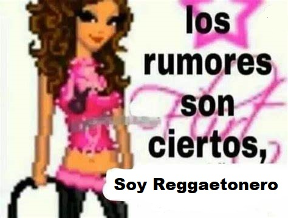
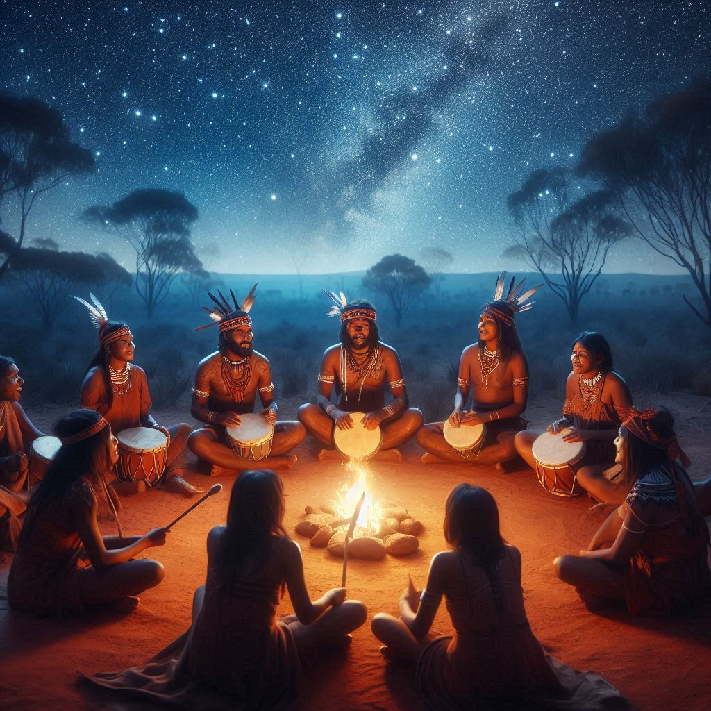
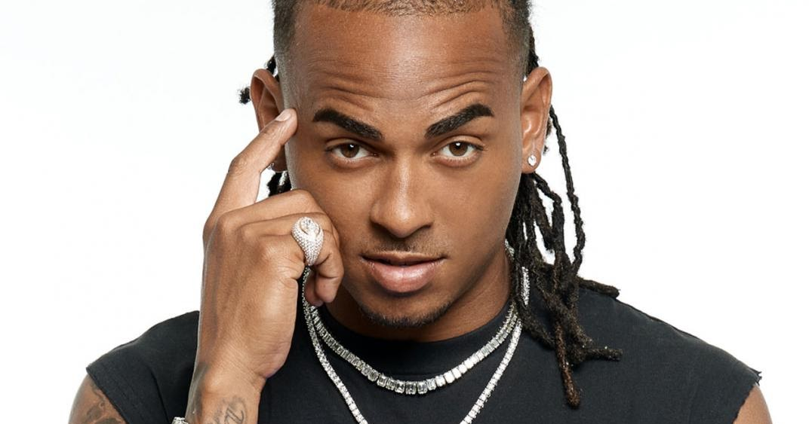
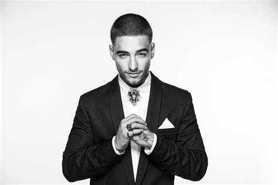
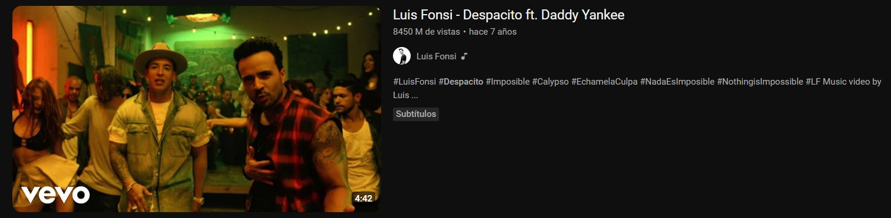

Inicio
Hablemos del origen del género musical que cuando vas a una fiesta no puede faltar, del favorito de los jóvenes, del de mayor porcentaje de crecimiento de oyentes en los últimos años, hablemos del Reggaetón.
Surgimiento y Evolución del Reggaetón

Los Inicios del Reggae Hispano

El Reggaetón surge en la década del 80 en Panamá, se dice que fue creado por el artista conocido como El General (Imagen 1), cuando surge se le conocía como Reggae en español, ya que consistía en tomar canciones del Reggae Jamaicano y usar como base estas canciones, pero con el tempo un poco acelerado.

Evolución al Reggaetón

Luego con la popularidad que comenzó a tomar el rap en Puerto Rico, gracias al aporte de algunos cantantes como Vico C, ahí mismo se empieza a popularizar un poco más el género en la década de los 90 y de los 2000 pero ya con mezcla del Hip Hop, con la contribución de varios artistas como fueron Don Chezina (Imagen 2), Hector el Father (Imagen 3) y Daddy Yankee (Imagen 4) principalmente, que fue el que le otorga nombre al género, ya que fue el primero en mencionar el término Reggaetón en una canción.


Ganancia de Popularidad

En sus inicios tocaba temas controversiales como la violencia, las drogas o problemáticas típicas entre los jóvenes de la época, lo que provocó que fuera un género bastante odiado y criticado a nivel mundial, pero poco a poco se empezaron a introducir instrumentos menos comunes como el tambor jamaiquino y se comenzó a mezclar con ritmos del Dembow, lo cual junto a que empezó a tomar un tono más calmado, alegre y romántico en sus letras, logró que dejara de ser un género tan odiado y comenzó a popularizarse una vez más. En estos cambios hubo gran influencia de Tego Calderón(Imagen 5), Don Omar(Imagen 6), Calle 13 en sus inicios(Imagen 7) y el mismísimo Daddy Yankee, época donde sale "La Gasolina", considerada un himno del género a nivel mundial, también hubo aportes de Wisin y Yandel(Imagen 8) que introdujeron la música electrónica al Reggaetón, logrando ganar 3 Grammys en el 2006 con sus canciones, tomando así cada vez más renombre y mayor popularidad el género.


La Depresión del 2007

En el 2007 sufrió un gran bajón ya que hubo personas que empezaron a tachar las canciones de Reggaetón de problemáticas y hasta satánicas, por lo que empezó a prohibirse en escuelas o sitios públicos, pero dichas prohibiciones lo que generaban más ganas en los jóvenes de escuchar ese tipo de música en sus ansias de rebeldía, por lo cual tal intento de cancelación provocó que se catapultara al género a la cima de la popularidad una vez más, dejando así de verse como una música amenazante y comenzando a verse como una potente arma de expresión para los artistas.
Camino a la Cima

Poco tiempo luego de esto iniciaron su carrera algunos artistas como Ozuna(Imagen 9), J Balvin(Imagen 10) o Maluma(Imagen 11) que siguieron contribuyendo al crecimiento de la música urbana, también aparece la figura de Karol G(Imagen 12), ya como artista individual, como imagen de la feminidad en el género, por lo cual en el 2016, entre estas apariciones y el debut de Bad Bunny(Imagen 13), cara representante del Reggaetón en la actualidad, el cual fue descubierto por Arcángel y empezó haciendo Trap pero rápidamente se diversificó en su música teniendo un gran enfoque en este género, el Reggaetón volvió a aumentar su popularidad alcanzando así la cima de los géneros musicales, siendo hoy el género más escuchado a nivel mundial y el favorito de la juventud en su mayoría a nivel mundial.





Datos Curiosos

A continuación, algunos datos que reflejan el
crecimiento que ha tenido el Reggaetón en los últimos
tiempos:
.La Revista Forbes informa que en el 2019 de las ventas de música por streaming un 34% son del Reggaetón
y ritmos latinos.
.En el 2017 recopilando la cantidad de horas escuchadas de Reggaetón por país se llego a que de el 2014
hasta esa fecha había tenido un crecimiento de reproducciones de un 116%, siendo el género con mayor
crecimiento a nivel mundial.

.En el Top 10 de Artistas con Mayor cantidad de visualizaciones en Youtube realizado en el 2023, 4 son cantantes de Reggaetón, ocupando la mayoría de puestos

.El récord de mayor cantidad de vistas en un video musical en todo Youtube es de la canción Despacito de Luis Fonsi con Daddy Yankee

.La canción I Like It de Cardi B, J Balvin y Bad Bunny es la canción de mayor popularidad en Estados Unidos según informa Redbull